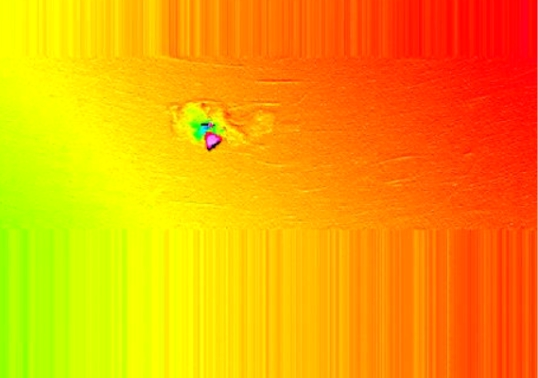
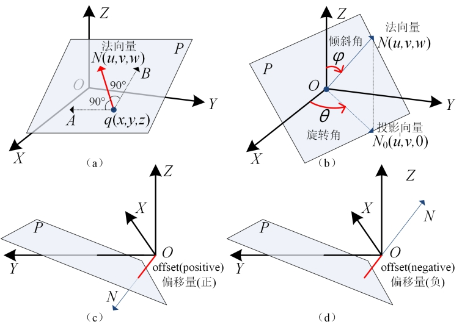

功能是剔除深度数据图像中的局外点，根据内点数据计算得到三维平面的解析表达式，从而能够在这个基平面上进行投影、高度测量和体积测量等后续操作。

| 分类 | 参数名称 | 参数描述 |
|---|---|---|
| 属性窗口 | 启用三维点集拟合 | 选择“是”，参数链中显示输入三维点集参数，并使用该三维点集进行平面拟合。 |
| 平面方向 | 分为两种：正像素空间和负像素空间。 |
|
| ROI类型 | 待拟合区域，分为7种：整幅图像、矩形、仿射矩形、圆形、圆环段、椭圆、多边形。 | |
| 局外点判定距离 | 参与拟合的深度数据点到拟合平面距离的最大值。 |
|
| 局外点比例 | 局外点占总深度数据点的比例。 | |
| 结果置信度 | 衡量使用内点构造拟合平面的可信程度，置信度越大，拟合平面越可靠。 | |
| 启用采样 | 是否进行采样拟合，选择“是”，则显示采样半宽参数。 | |
| 采样距离 | 每隔多少采样一次，缩短平面拟合时间。 | |
| 启用掩膜 | 用于过滤不需要拟合的区域，对该部分添加掩膜。选择“是”时，则可通过属性高级界面进行掩膜设置 | |
| 开启并行运算 | 是否开启并行运算，选择是时，算法将开启OpenMp并行计算方式，可以提升计算速度，但可能出现耗时不稳定的情况，选择否时，算法将关闭OpenMp并行计算。 | |
| 线程数百分比 | 设置并行运算的线程数百分比，有效范围为 (0, 0.75]，对应表示(0%, 75%]百分比范围。 | |
| 图像窗口 | 深度图像 | 显示待检测的深度图像，显示为伪彩色图像。 |
| 拟合区域 | 在图像上显示待拟合区域。 | |
| 数据链 | 输入图像 | 输入待检测的深度图像，仅在属性栏参数启用三维点集拟合选择“否”时有效。 |
| 输入三维点集 | 进行平面拟合的三维点集，仅在属性栏参数启用三维点集拟合选择“是”时有效。 | |
| 二维线性变换 | 目标相对于模板的平移、旋转、缩放变换，仅在属性栏参数启用三维点集拟合选择“否”时有效。 | |
| 高级界面 | 仅在属性栏参数启用掩膜选择“是”时，显示掩膜设置界面。 |
| 分类 | 参数名称 | 参数描述 |
|---|---|---|
| 监视窗口 | 输出图像 | 输出深度图像的长宽和像素大小，以及深度数据参数，仅在属性栏参数启用三维点集拟合选择“否”时有效。 |
| 拟合平面 | 输出拟合平面结果，包括平面的法向量、偏移量、倾斜角、旋转角。 |
|
| 平面度 | 输出平面的平面度，即最大偏移-最小偏移，单位：mm。 | |
| 拟合误差 | 输出平面的拟合误差。 | |
| 平面拟合的点数 | 输出平面拟合中参与拟合的点数。 | |
| 执行结果 | 工具执行结果。 | |
| 执行时间 | 工具执行时间。 | |
| 图像窗口 | 输出图像 | 显示检测的深度图像，显示为伪彩色图像。 |
| 数据链 | 同监视窗口参数，供后续工具使用。 |
距离阈值：指设定点到拟合平面距离的最大值；
局外点：指深度数据点到拟合平面的距离不满足距离阈值的点；
内点：指深度数据点到拟合平面的距离在距离阈值之内的点；
局外点比例：局外点占总深度数据点的比例，其中，内点与外点的和为总深度数据点；
置信度：衡量使用内点构造拟合平面的可信程度，置信度越大，拟合平面越可靠。
法向量：垂直于平面的向量N，表示平面在三维空间中的方向，如图2(a)所示。
倾斜角：Z轴正方向按顺时针方向与平面法向量N的夹角φ，取值范围为：[0,π] ，如图2(b)所示。
旋转角：X轴正方向按逆时针方向与法向量的投影向量N0的夹角θ，取值范围为：[0, 2π) ，如图2(b)所示。
偏移量：将原点移动到当前平面P上的距离偏移，若移动方向与法向量方向相同，偏移量为正；否则为负，如图2©、(d)所示。

Step 1 设置拟合区域和平面方向
为了获取三维空间点数据需要设置感兴趣区域。在获取拟合的平面方程时，需要确定平面方向，即平面法向量的方向；平面方向共包含：正向像素空间Z和负向像素空间Z两种，其具体物理含义如下表所示。两种平面方向得到的平面法向量的数值是互为相反数的。
Step 2设置参数、采样半宽以及是否启用掩膜
根据需要设置距离阈值、置信度、最糟糕情况下外点比例、采样半宽以及掩膜的设置。
Step3 执行拟合和输出结果
在上述步骤之后，就可以执行拟合了。对于局外点平面拟合，输出的结果包括：拟合平面的法向量、偏移旋转和拟合的均方差。
无
参见“\Samples\3D\深度图\带局外点平面拟合工具.gvp”。